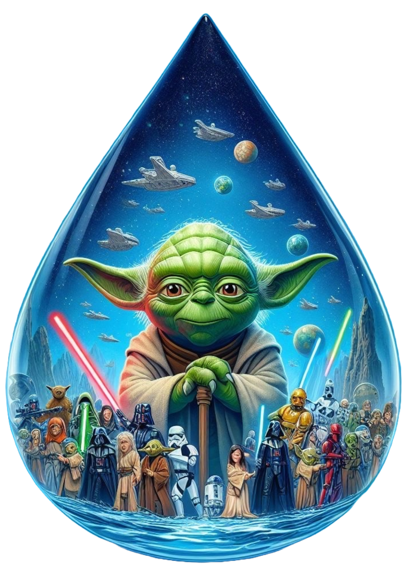

Guardianes de la Galaxia Verde
Esta Situación de Aprendizaje está dirigida al alumnado de Educación Primaria y tiene como finalidad fomentar la concienciación medioambiental a través de una metodología activa, participativa y gamificada.
El alumnado se convertirá en auténticos “Guardianes de la Galaxia Verde”, asumiendo el papel de aprendices Jedi cuya misión consistirá en investigar la situación medioambiental de las diferentes provincias de Andalucía.
A lo largo de la propuesta, desarrollarán diversas actividades que les permitirán adquirir conocimientos, trabajar de forma cooperativa y desarrollar competencias clave especialmente la competencia en comunicación lingüística, la competencia digital y la competencia social y cívica., culminando en la elaboración de un informe medioambiental que será expuesto oralmente.
Esta propuesta pretende implicar activamente al alumnado en su aprendizaje, fomentando la conciencia medioambiental a través de una experiencia significativa, motivadora y contextualizada.
Presentación del proyecto: "Guardianes del agua: aprendemos a cuidarla"
A continuación, se describe el proyecto que se desarrollará dentro de esta Situación de Aprendizaje:
Este proyecto, titulado “Guardianes del agua: aprendemos a cuidarla”, se centra en la importancia del agua y su uso responsable, especialmente relevante en Andalucía debido a los periodos de sequía.
Está dirigido al alumnado de segundo curso de Educación Primaria y se desarrollará a lo largo de varias sesiones mediante una metodología activa, participativa y basada en el aprendizaje por proyectos.
A través de diferentes actividades, el alumnado investigará sobre el consumo de agua, reflexionará sobre su importancia y adquirirá hábitos responsables para su cuidado.
Como producto final, elaborarán un cartel o infografía con consejos para ahorrar agua, que será expuesto al resto del grupo, fomentando la competencia comunicativa, el trabajo cooperativo y la conciencia medioambiental.

De este modo, el proyecto conecta el aprendizaje con la realidad del entorno, favoreciendo la implicación del alumnado y el desarrollo de hábitos responsables.